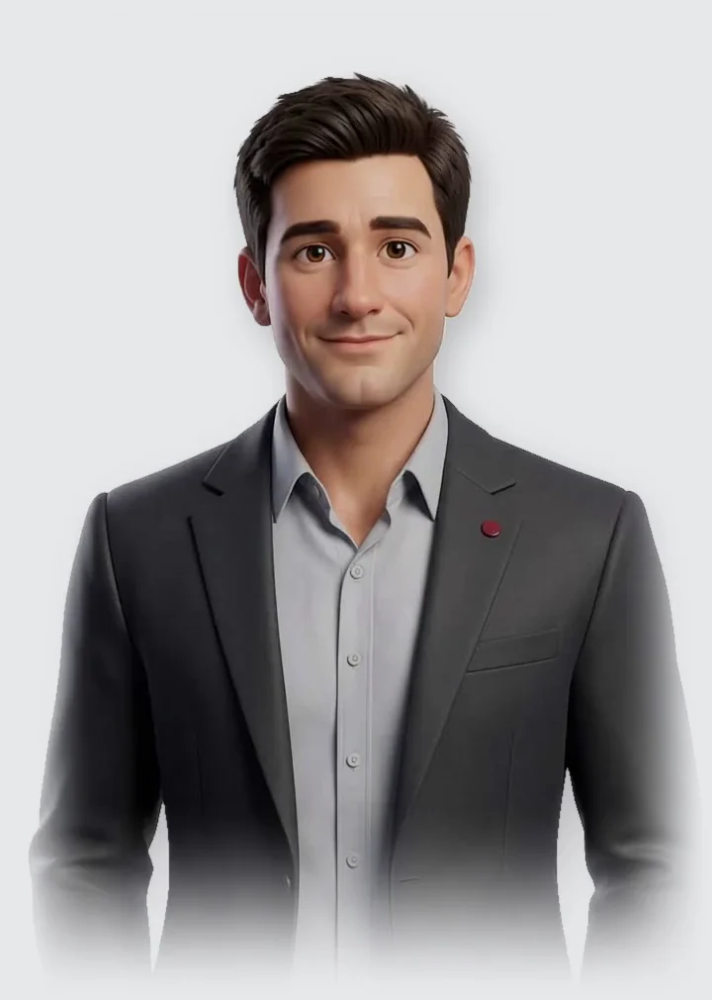
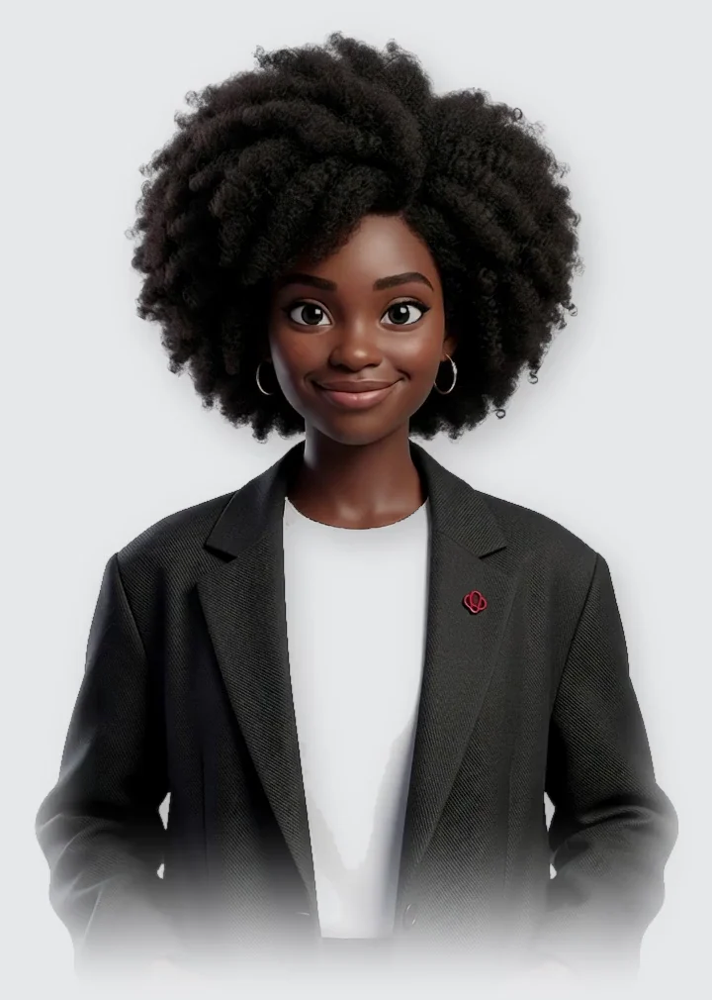
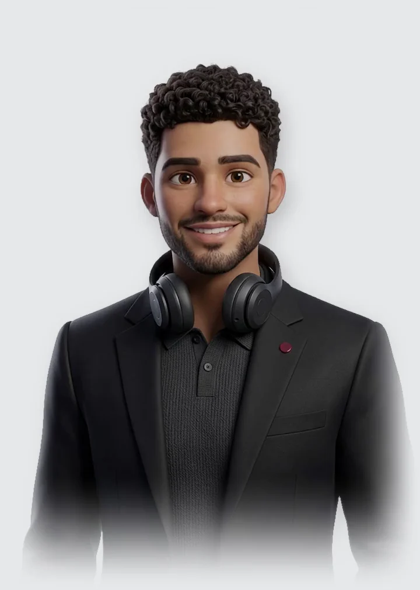
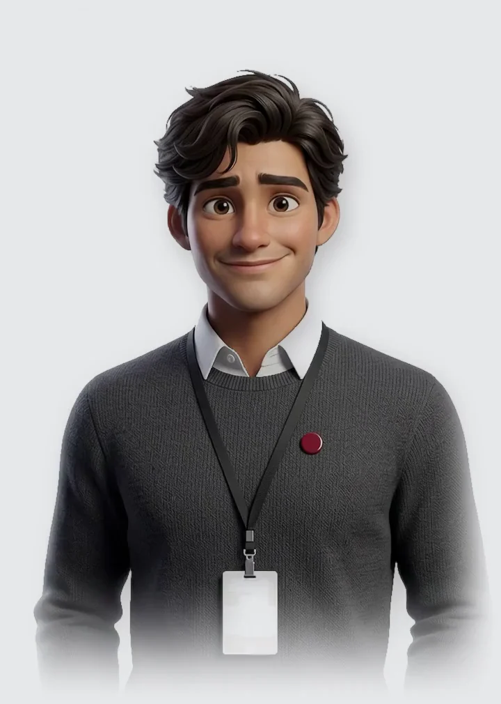
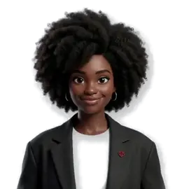
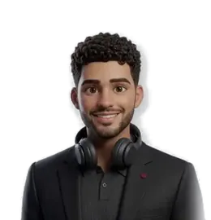

THE CONCEPT TEAM
Your team's English is correct. Now make it land.
Six AI coaches built on the Concept method, each responsible for one part of English and led by Netto, director of studies. Your people work with them in the Concept Coach app on the days between lessons.

Netto
DIRECTOR OF STUDIES
REGISTER
Victor Hugo
“Read the room, then hit send.”
Victor Hugo shows your people what a sentence tells the person reading it, from a client email to a quick Slack thread. They choose the version. He makes sure they know why.
CHECK
Who is reading?
WHAT THIS TELLS A CLIENT
Correct, and it reads as an order. The client hears your deadline before their reason to sign.
Would it be possible to have the contract signed by Friday?
Reads as a request. The client has room to say yes.
Could we aim to have it signed by Friday?
Makes the deadline shared work.
You know this client. Your call.
GRAMMAR AND PUNCTUATION
Luana
“Every comma counts.”
Luana works on the sentences that are almost right. She shows what a comma or a tense changes for the reader, so the fix sticks the next time.
BOOKS, C1 GRAMMAR
Is this right for an all-hands email?
WHAT THE COMMAS CHANGE
Without commas, the sentence suggests you have more than one CEO and you mean the one who joined in March.
Our CEO, who joined in March, will present the results.
One CEO. The March detail is extra information.
Two commas. One CEO.

EXPRESSIONS
Bia
“That's how people really say it.”
Bia explains the expressions people hear in meetings and Slack, with the closest version in their own language and the situations where each one fits.
EXPRESSIONS
IN ITALIAN
Closest to fare il punto or sentirsi un attimo.
Let's touch base tomorrow.
Very common at work. Fine with your manager and your team.
Could we have a quick call tomorrow?
Safer with a new client.
Same idea, a different room.

PRONUNCIATION AND LISTENING
Murillo
“Stress the word that matters.”
Murillo gives your people a sentence from real work, listens to them say it and shows exactly where the stress fell. Then they try again.
BOOKS, CALIBRATED SPEECH
Say it out loud
WHAT MURILLO HEARD
You said PRES-ent, the noun. As a verb it is pre-SENT.
The gift is a PRES-ent.
You pre-SENT the results.
Once more, stress on SENT.

WORD ORIGINS
Marcelo
“Every word has a story.”
Marcelo is the intern who digs up where words come from. A word with a story is a word people remember and use with confidence.
WORD ORIGINS
WHERE IT CAME FROM
From the Old French bougette, a small leather bag.
In Britain, the finance minister opened the budget, the bag that held the year's accounts. The word moved from the bag to the plan inside it.
Now you won't forget it.
HOW IT WORKS FOR YOUR COMPANY
Practice in private. Improve in public.
Conversations with the coaches stay between the learner and the coach. The company never sees an individual's answers or level. People practice the sentence they would never risk in a meeting.
The app picks up what came up in class, so the practice starts where the lesson stopped. Every coach follows the same method as the teacher in the room.
Five situations from real work. No sign-up.
Victor HugoREGISTER
QUESTION 1 OF 5
A client's invoice is three weeks late. Which message do you send?
You want the payment and you want to keep the client.
That one lands.That one slips.
LuanaGRAMMAR AND PUNCTUATION
QUESTION 2 OF 5
This sentence opens your report to the board. Which version would a careful editor leave alone?
The board reads every word. You want them reading the numbers.
That one lands.That one slips.

BiaEXPRESSIONS
QUESTION 3 OF 5
A client says your proposal is “not quite there yet.” What is the client telling you?
You want to know whether to edit or rethink.
That one lands.That one slips.

MurilloPRONUNCIATION AND LISTENING
QUESTION 4 OF 5
You are correcting a date on a call. Which word carries the stress?
You want the correction to be the first thing they hear.
That one lands.That one slips.
MarceloWORD ORIGINS
QUESTION 5 OF 5
The word “deadline” first meant...
Every word has a story. This one starts in the 1860s.
That one lands.That one slips.
YOUR RESULT
See where your team lands.
Answer the five questions above and your result appears here.
You landed five of five.
Here is where your English lands and where it slips. Each coach works on one of these in the app, a few minutes a day.
- Victor HugoREGISTER
You asked for a date and kept the client.Your reminder was correct but asked for nothing the client could act on.
LANDEDSLIPPED - LuanaGRAMMAR AND PUNCTUATION
Clean sentence for a board report.“Less” with things you count. Easy to miss, easy for a board to notice.
LANDEDSLIPPED - BiaEXPRESSIONS
You read the client the way the client meant it.The phrase was softer than its meaning.
LANDEDSLIPPED - MurilloPRONUNCIATION AND LISTENING
You stressed the word that mattered.The stress fell on the wrong word, so the point got lost.
LANDEDSLIPPED - MarceloWORD ORIGINS
You knew where the word came from.The word had a darker start than most people guess.
LANDEDSLIPPED